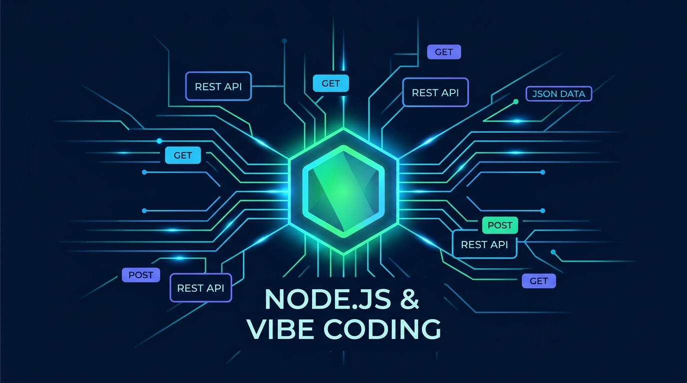

Aula 01: Introdução ao Node.js, Frameworks Web e Gerenciamento de Pacotes com IA

1. Objetivos de Aprendizagem
Ao concluir esta aula assíncrona, você será capaz de:import / export).npm, configurando o manifesto package.json e utilizando Vibe Coding para geração e auditoria de configurações iniciais.2. Fundamentação Teórica (Markdown)
2.1 Do Navegador ao Servidor: O Ecossistema Node.js
Historicamente, o JavaScript Vanilla nascia restrito ao contexto do navegador para manipulação do DOM. Com a criação do Node.js sobre a engine V8 (do Google Chrome) combinada à bibliotecalibuv, o JavaScript consolidou-se como uma linguagem full-stack de alta performance para servidores Web e APIs RESTful.
Diferente de servidores tradicionais que alocam uma thread pesada do sistema operacional para cada requisição HTTP recebida, o Node.js opera sob o modelo Single-Threaded Event Loop com I/O assíncrono não bloqueante:
Promises e async/await).2.2 Frameworks Web em Node.js e Gerenciamento de Pacotes (npm)
Embora o módulo nativo node:http forneça toda a base de rede para criar servidores Web sem dependências externas, frameworks minimalistas (como Express e Fastify) adicionam camadas ergonômicas de roteamento, middlewares e serialização JSON.
O Node Package Manager (npm) centraliza a gestão de bibliotecas por meio do arquivo package.json. Na abordagem moderna adotada nesta disciplina, ativamos o suporte nativo a ES Modules definindo "type": "module", o que unifica a sintaxe import/export entre o back-end Node.js e o front-end React.
2.3 Vibe Coding no Setup Arquitetural
No paradigma de Desenvolvimento Orientado a Especificação (SDD) e Vibe Coding, o desenvolvedor não perde tempo memorizando flags obscuras de configuração: ele especifica requisitos técnicos claros (versão da engine Node, scripts de execução com--watch, política de módulos ES6 e dependências estritamente necessárias) e audita o artefato gerado pela IA.
3. Atividade Prática Guiada (Hands-on)
Passo 1: Prompt de Especificação para Inicialização do Projeto (Vibe Coding)
Utilize o seguinte prompt estruturado no seu assistente de código (Cursor, GitHub Copilot ou Gemini Code Assist):TEXT[SPEC-PROMPT]: Gere um arquivo package.json para uma API acadêmica do IFCE Campus Baturité em Node.js 20+, utilizando ES Modules ("type": "module"), sem dependências externas desnecessárias, contendo scripts para desenvolvimento com live-reload nativo (--watch) e execução de testes nativos (node --test). Em seguida, crie um módulo utilitário src/infoSistema.js em JavaScript Vanilla que retorne metadados da plataforma e um servidor HTTP básico em src/index.js.
Passo 2: Implementação e Inspeção do Código Gerado
JAVASCRIPT// src/infoSistema.js — Módulo ES6+ em JavaScript Vanilla import os from 'node:os'; export function obterStatusServidor() { return { instituicao: 'IFCE Campus Baturité', disciplina: 'Desenvolvimento Web III (UC17-DWIII)', runtime: `Node.js ${process.version}`, plataforma: `${os.type()} (${os.arch()})`, memoriaLivreMB: Math.round(os.freemem() / (1024 * 1024)), timestamp: new Date().toISOString() }; }
JAVASCRIPT// src/index.js — Servidor HTTP Nativo em Node.js import http from 'node:http'; import { obterStatusServidor } from './infoSistema.js'; const PORT = process.env.PORT || 3000; const server = http.createServer((req, res) => { if (req.method === 'GET' && req.url === '/status') { res.writeHead(200, { 'Content-Type': 'application/json; charset=utf-8' }); res.end(JSON.stringify(obterStatusServidor(), null, 2)); return; } res.writeHead(404, { 'Content-Type': 'application/json; charset=utf-8' }); res.end(JSON.stringify({ erro: 'Rota não encontrada' })); }); server.listen(PORT, () => { console.log(`Servidor ativo em http://localhost:${PORT}/status`); });
Passo 3: Teste de Validação
Execute o comando abaixo no terminal e valide se o JSON retornado apresenta o código HTTP200 e a versão do Node.js:
BASHnode --check src/index.js